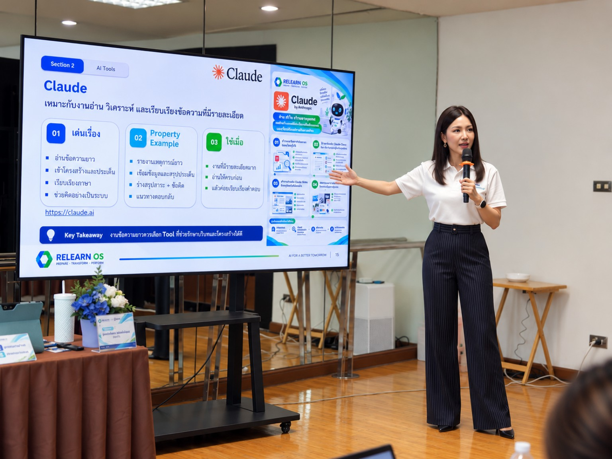
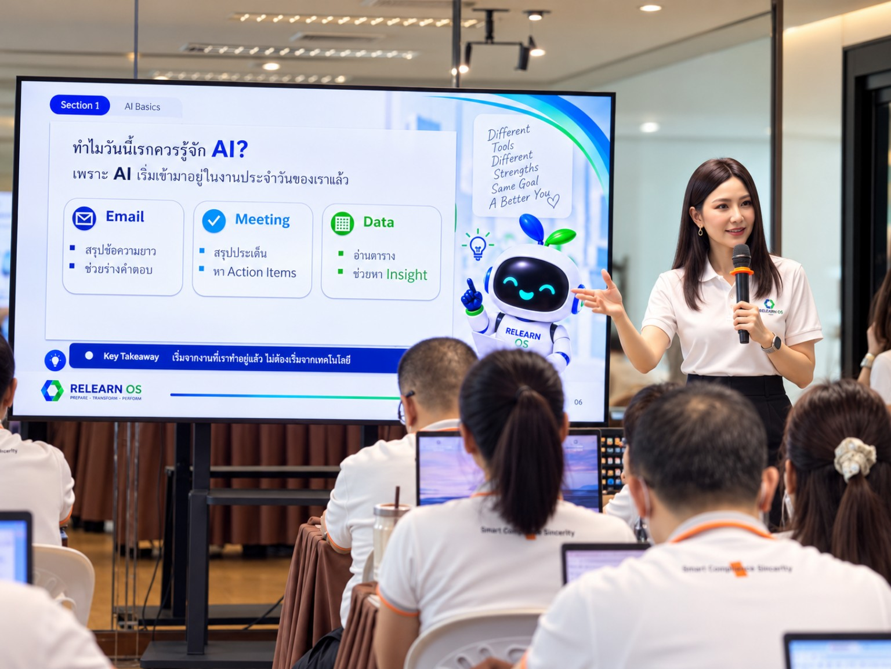
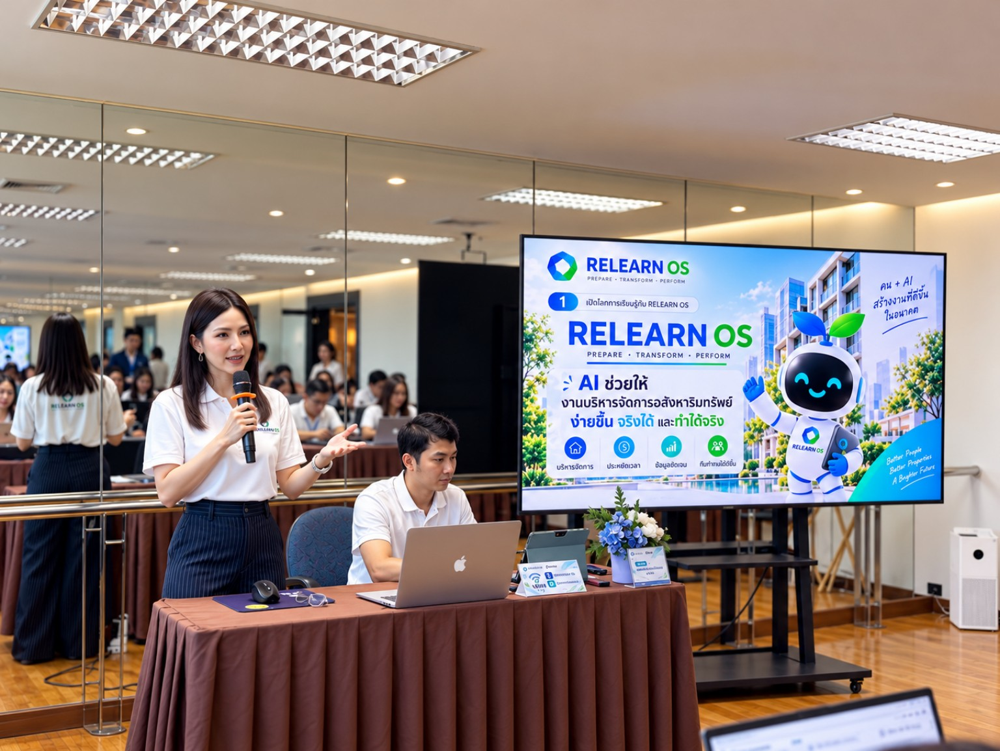

Practical AI, Grounded in Real Work
Introducing AI through clear, familiar examples so people can see where it can support their everyday work.
PROJECT 04
Turning experience into practical learning that people can use in their real work.
Knowledge becomes meaningful when people can connect it to their own context, make clearer decisions, and take the next step with confidence.

WHAT THIS WORK REFLECTS
Speaking and facilitation are not only about sharing ideas. They are about creating the conditions for people to ask better questions, see possibilities in their own work, and move from understanding to action.
FEATURED ENGAGEMENT
Designed and delivered an onsite AI foundations session for QPM teams—making AI feel approachable, relevant, and safe to explore through familiar work such as email, meeting notes, and data. The focus was not technology for its own sake, but helping people begin with real work while keeping human judgement at the centre.

Introducing AI through clear, familiar examples so people can see where it can support their everyday work.

Combining practical demonstration, guided reflection, and responsible-use principles to help teams begin with confidence.